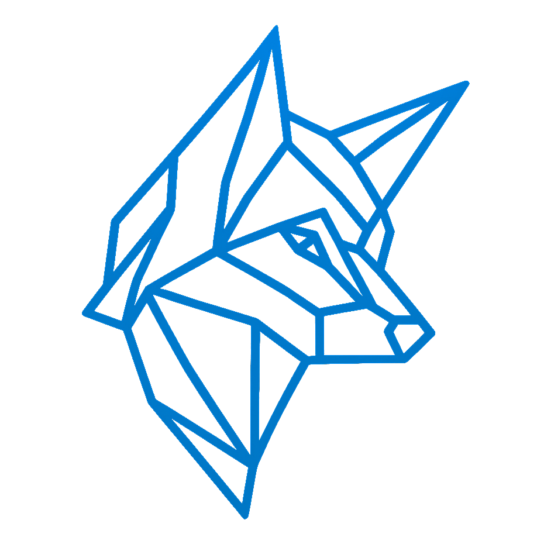
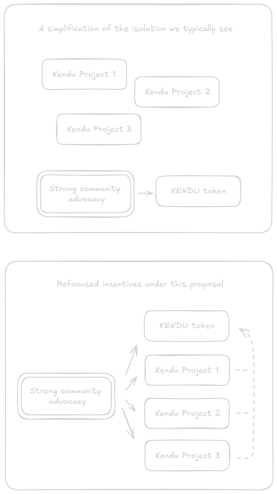
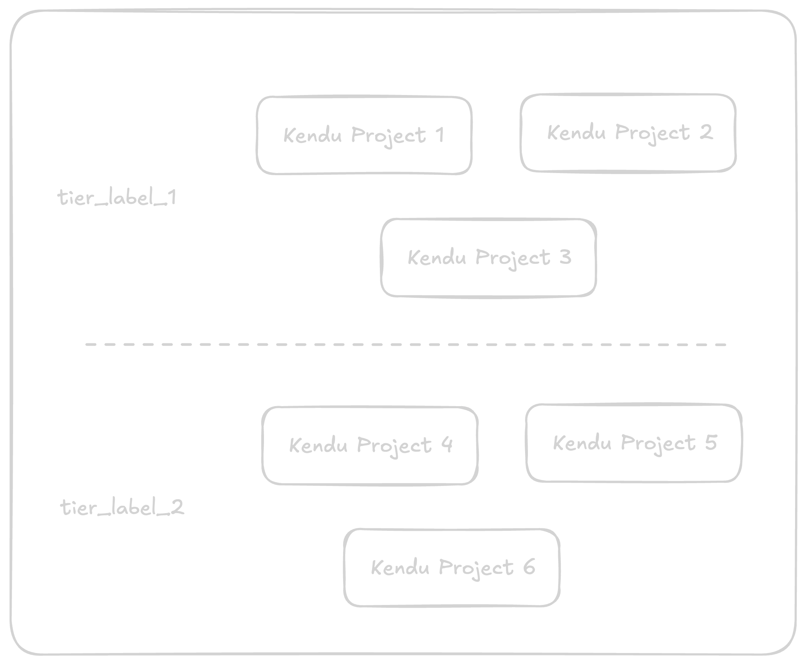
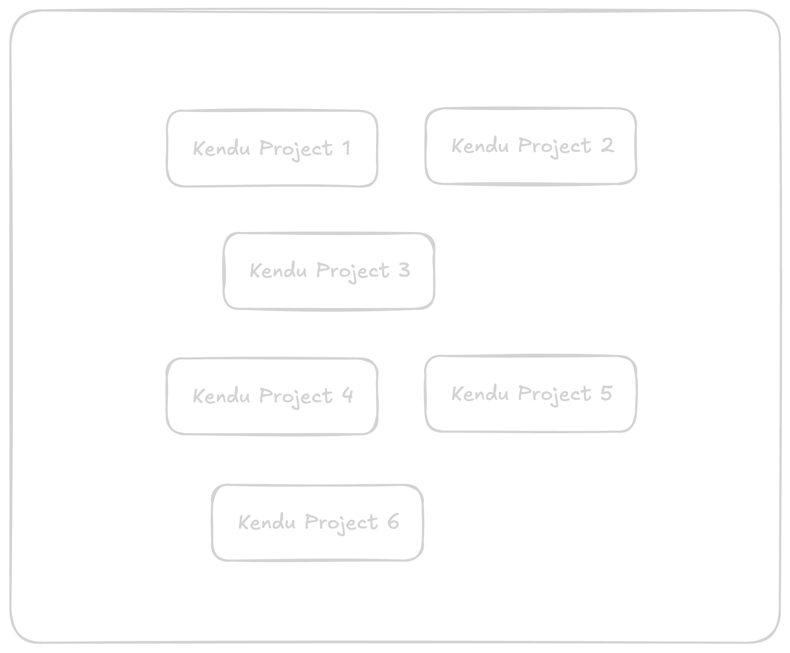

Kendu Elements Initiative 1 (KEI-1): Providing a direct link between our brand growth and our token growth
Background
The first thing worth mentioning before going into the proposal itself is that regardless of any formal initiatives that the community chooses to adopt, the heart and soul of Kendu will always be the often under-recognised Chads and Chadettes that put in serious effort day in and day out, whether that’s through IRL efforts, starting a venture under the Kendu umbrella, or simply advocating on social media. We would get nowhere without these efforts, and so these sort of proposals only seek to augment this critical work rather than act as a substitute.
Initiatives born out of Elements are non-binding and subject to vigorous community discussion in any event, both on our existing channels such as Telegram, and new channels that provide a less ephemeral and more long-form medium such as the Discourse forum that will open alongside the launch of the Snapshot space. Even after the voting period concludes for a given proposal, the degree to which it is adopted is ultimately up to the various Kendu stakeholders to decide.
Like all Elements initiatives, its explicit goal is to be a significant driver in getting the KENDU token to new all-time highs. This core criteria for every Elements initiative strongly disincentivises low impact proposals and allows the project to remain focused.
This is also the first of three main proposals that comprise Project Trident, a specific collection of early Elements initiatives designed to accelerate Kendu’s momentum.
Finally, an interesting aside of this proposal is that there was initially not a strong affinity towards the burn aspect, mainly on account of how costly such programs are, however after spending several weeks not only carefully dissecting projects that have implemented ongoing burn mechanisms but reviewing the academic literature on their effectiveness, I am now of the firm belief, for reasons that should hopefully be made clear from this proposal, that Kendu would benefit greatly from having such a formalised mechanism in place.
Proposal
This proposal aims to significantly increase KENDU buy pressure by combining a treasury contribution framework with an ecosystem-driven token burn model. As the initiative is designed to scale with the growth of brands under the Kendu banner, it provides a concrete link between the expansion of the ecosystem and our token performance.
In respect to the token burn component of the proposal, it is likely to achieve the aforementioned goal through two main mechanisms:
- The direct effect from making tokens more scarce by reducing circulating supply.
- The far larger indirect effect that a systematic and ongoing burn program signals to new holders that there will be further reductions in circulating supply, and subsequently, that the specific implementation described in this proposal allows us to position Kendu, in addition to our existing selling points, as a deflationary memecoin.
Importantly, this proposal is backed by strong incentives.
A central component of this is a leaderboard that tracks treasury contributions and token burns by Kendu brands, providing an incentive for such projects to participate, both because of the prominent placement of such a leaderboard and because the broader Kendu community will be encouraged to directly advocate for these ventures above what we currently see, given that the new treasury contribution and token burn model in itself results in these ventures bolstering the KENDU token directly.
In short, all of the main types of participants in the ecosystem are incentivised in the context of their specific roles. Ventures will likely both welcome the direct exposure from being displayed prominently on a major leaderboard and the additional support from the community as a result of such a placement. In turn, the broader Kendu community is incentivised to provide extra support to those on the leaderboard as treasury contributions and token burns result in KENDU buy pressure.
What this represents is somewhat of a reworking of the incentive paradigm of Kendu. Currently, what we see in practice is not particularly robust community advocacy for brands under the Kendu banner when compared to the token itself. As this proposal strengthens the link between the wider ecosystem and the performance of the token, it provides a more firm incentive for the community to directly rally behind such projects. For instance, let’s take Kendu Coffee, just as an example. It will presumably be on the leaderboard in some capacity, so its contributions are very directly helping not just the broader Kendu ecosystem, but the performance of the token, especially if it turns out to be one of the projects that goes on to see breakout success. The wider Kendu community will then be strongly encouraged to support Kendu Coffee in relevant settings. If you’ve enjoyed Kendu Coffee at some point and happen to frequent the various coffee subreddits, for instance, then it would be highly recommended to share your thoughts with such communities and help get the word out.
In this scenario, because Kendu Coffee would be contributing through treasury funding and token burns, it means that advocating for Kendu Coffee, without even mentioning the token, still results in a very tangible benefit for the KENDU token. The added advantage of this is that there are far more avenues to recommend a product within a specific product community than there are to advocate for a token.
This gives a bit of an idea on how the proposal realigns incentives:

Going back to the leaderboard, one of the main positive by-products of the system is that it is optimised for relative, not absolute, contributions. As the Kendu ecosystem is still at a very nascent stage, virtually all Kendu projects are still currently getting their footing and have not yet reached significant profitability. It is therefore unreasonable to expect these projects to contribute significantly to the treasury or burn a meaningful amount of tokens before they’re in a position to do so, and a system that emphasises relative contributions, that reflects the overall stage of the ecosystem’s development, is favourable.
Another positive by-product of the leaderboard system is that it puts far less emphasis on pledges around future contributions by projects, for instance a pledge to “allocate X% of future profit to token burns”.
The reason why such pledges can be problematic is best illustrated through example. Consider a situation where a long-established Kendu project with broad community support, Project A, pledges 10% of future profit. This pledge understandably increases enthusiasm in the project among the community. On the other hand, Project B, a far newer Kendu project in a similar product line to Project A but has otherwise had very little engagement with the community, pledges 40% of profit in order to rapidly gain a footing in the ecosystem, but unfortunately, without any intention of actually following through. In this situation, they have unfairly undercut Project A by offering a much higher pledge, but because their venture is run offchain, as is the case with most Kendu projects, then it is impossible to verify what the amount that was sent to the treasury actually represents in terms of their profit, as their books are understandably closed.
Keen readers of this proposal will likely have noticed the parallel that Elements itself pledged 60% of revenue from the mint to the Kendu treasury, and in fact was likely the original project in the ecosystem to float the model back in July. The key distinction here, however, is that the Elements mint is entirely onchain, and it was therefore possible to make the allocation trustlessly through smart contracts. Each time an item is minted, OpenSea automatically forwards the funds to a splitter contract where funds are locked until they are distributed to the predetermined addresses specified at the time of deployment of the contract. It is therefore trivial to verify through a block explorer that exactly 60% of the mint, after accounting for OpenSea’s fees, has indeed made its way to the treasury.
It should be stressed that the concern with future pledges is not that familiar Kendu projects are not making them in good faith, but rather, that newer projects without the best intentions will make large and unrealistic pledges in order to gain credibility in the community, creating an unfair environment for existing projects that have made more sustainable pledges. A leaderboard system circumvents this problem by focusing on contributions already made.
Another important aspect to note about this proposal, which will be explored in greater detail in later sections, is that burn programs are sometimes less than ideal given their inefficiency, and if the community ultimately favoured replacing this component at some point, the proposal still remains strong as much of its value stems from the overall incentive mechanisms described.
Token burns are highly effective, when implemented correctly
In the early stages of this proposal, a lot of research was done trying to quantify the impact buyback and burn programs actually have, looking at everything from the academic literature through to individual announcements and their direct effects. To keep this proposal manageable, only the major parts of this research have been included.
One of the main takeaways is that projects buying tokens from the open market and burning them has very little effect in creating sustained buy pressure when they are one-offs or performed on a sporadic basis, but are generally effective when they are a part of an ongoing, systemic program, as it doesn’t just create buy pressure from the direct effect of buying and reducing circulating supply, but through signalling that more reductions in supply are to be expected.
The main source that led me to this conclusion was the 2022 paper Buyback and Burn Mechanisms: Price Manipulation or Value Signalling?1 by W E Allen, Berg and Davidson, which explicitly goes into the signalling effect (p. 4).
Outside of this paper, I also looked at Token-Based Platform Finance2 by L W Cong, Y Li and T Wang, and even though the burn mechanism of EIP-1559 works a bit differently to most conventional burn programs, I still found a lot of useful information in Empirical Analysis of EIP-1559: Transaction Fees, Waiting Times, and Consensus Security3 by Y Liu, Y Lu, K Nayak, F Zhang, L Zhang and Y Zhao.
Most of these papers showed either a significant effect when the burn program was ongoing, or weak evidence when such programs are sporadic without the signalling effect described in the earlier-mentioned paper by Allen, Berg and Davidson.
In terms of specific projects with successful burn programs, the two that most stood out in my research when scouring announcements were Binance (BNB) and PumpFun (PUMP). BNB and PUMP have market caps of $160B and $1.5B respectfully, as of the time this part of the proposal was written.
Both of these projects have ongoing burn programs, likely producing a strong signalling effect that far outsizes any direct market effect. In the case of Binance, their program has evolved over time. Originally it was simply 20% of profit, per their whitepaper,4 but in its current iteration it involves both burning a portion of gas fees and quarterly auto-burns that are directly tied to BNB’s price.5 In terms of PumpFun, they consistently burn about 18% of revenue generated from fees.6 Something worth pointing out is that only about 60% of PumpFun’s buyback program goes towards token burns, whereas the remainder is used for staking rewards.7
The final thing to note on PumpFun is that in the weeks since work on this proposal first started, PUMP has had a significant reversal throughout October that it has yet to fully recover from, however this coincides not only with a broader market downturn but a reduced rate of token burning by the project during this period.8
Treasury contributions must be a significant part of the picture
As mentioned at the outset, reducing circulating supply and signalling through token burns are an effective way to increase price pressure, but are also a blunt instrument due to their inefficiency. The implication of this is that although they are low-hanging fruit that should be part of Kendu because being deflationary gives us one additional strong selling point, more targeted spending is also needed. Bolstering the treasury allows expenditure on highly focused campaigns that complement our existing coordination efforts.
What ratio a project under the Kendu banner should consider allocating to a burn program versus treasury spending will likely be one of the main points of discussion in respect to this proposal. My personal recommendation is that spending allocated to a burn program likely shouldn’t exceed 30% of total spending as part of this initiative, and in practice even lower than this due to how effective targeted campaigns funded by the treasury can be.
Of course it will ultimately be up to a given project if they want to only allocate funds to one or the other, or even disregard the recommendations in this proposal in their entirety.
The leaderboard
Firstly, to reiterate from earlier, incentives are the bedrock of this proposal’s success. Although all projects under the Kendu banner would benefit to various degrees from the appreciation of the KENDU token, contributing to the treasury and burning tokens can be incredibly costly, and so this alone will not be strong enough of an impetus for many of these ventures. Therefore, projects must receive a more tangible and direct reward for doing so, and similarly, the broader Kendu community must be incentivised for their role as well.
The leaderboard is the central component that ties this together. Ideally it would be displayed prominently on our main domain, but a standalone site can also be viable.
There are two main forms it can take.
A version with an explicit tier system:

Or a form that simply ranks the projects visually without specific tier labels:

Projects are displayed higher on the leaderboard when they have a greater combined treasury contribution plus token burn total relative to other projects. This means that when the leaderboard is first launched, the first project to contribute any amount would rise to the top. This ensures that the leaderboard reflects the current stage of development of the ecosystem, when profitability is still low among virtually all projects, rather than creating pressure for brands to contribute more than they’re comfortably able to.
All Kendu projects that contribute can be expected to be displayed on the leaderboard in some capacity, short of serious reasons to disassociate such as the venture’s underlying business being predicated on fraudulent activity.
Projects benefit from the leaderboard in two primary ways:
- The rallying of the community behind the projects that meaningfully contribute; and to a lesser extent
- The direct exposure from being displayed on a prominent ranking
To expand on the first point, the broader Kendu community will be strongly encouraged to promote the product lines or services of the projects on the leaderboard, in settings relevant to their underlying businesses.
The community of KENDU token holders themselves are strongly incentivised to carry out this role because the projects on the leaderboard that are contributing to the treasury and burning tokens are directly spurring buy pressure.
Alternatives to token burns
As mentioned previously, one of the more discussion-worthy aspects of this proposal will likely be around the token burn component, mainly due to the sheer expense of such programs.
The strongest of the main alternatives to token burning is arguably projects locking tokens in a smart contract for a set period of time, or in its more complex form, staking for a fixed period with yield generation. The main advantage of either of these is that obviously at the end of the vesting period the tokens are returned, but as this creates the potential for a sell cliff, this does not have anywhere near the signalling effect as burns given that the latter results in the permanent removal of the tokens from circulating supply. It is therefore unsurprising that much of the same academic sources cited earlier in this proposal did not find compelling evidence that such lock-up periods result in meaningful buy pressure over the medium-to-longer-term.
Implementation notes
In order to make the leaderboard outlined in earlier sections possible, a few minor pieces are needed outside of the frontend itself, including:
- A method to link a project with a specific wallet, so that contributions can be tracked. This can be something as simple as requesting a wallet sign a message with the project name, or alternatively, having it send a very small amount of ETH that reflects a highly specific value that is used only once. As projects in the ecosystem are not expected to come online at an unmanageable rate, this is something that can be done manually for each project.
- An automatic process to update the total contributions. I would personally just use a cron job for this, and as all the data is confined to only two addresses (the burn address and the Kendu treasury address), this can easily be combined with a short node script that pulls data using ethers.js.
Snapshot voting
Once the mint concludes and all voting power is subsequently allocated, the Snapshot will open where this proposal can be found. There will then be a period of discussion in the dedicated Discourse thread and our existing Kendu channels, and revisions will be incorporated if necessary before a vote is carried out. It will then be up to individual projects in the ecosystem if they want to adopt the proposal.
Final thoughts
To achieve its primary goal of significantly increasing KENDU buy pressure, this proposal seeks to create a direct, systematic link between the expansion of our brand and our token growth. This connection, and how it focuses incentives in such a way that it strongly encourages the community to play a more active role in advocating for individual brands, is the core of this proposal. The exact form the venture contribution model takes, particularly in respect to the role of token burning and its proportion in overall contributions, remains one of the more open-ended aspects of this initiative.
My personal recommendation is that the burn component should stay in place as there is arguably strong value in just having a deflationary mechanism that we can point potential holders to, regardless of its ultimate scope.
Like all Elements proposals, discussion is highly encouraged in the lead up to voting.
Last edited 6 Nov, 2025.